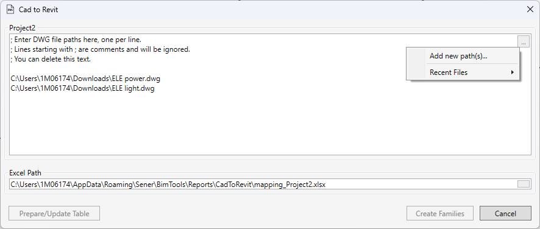

CadToRevit: Colocar y Sincronizar Ejemplares de Familia desde Bloques CAD
Tabla de contenidos
La herramienta CadToRevit está diseñada para crear y actualizar automáticamente ejemplares de familia de Revit basados en bloques de archivos DWG. Permite acelerar significativamente el proceso de transferencia de datos desde dibujos 2D a un modelo 3D y mantenerlo actualizado.
Características Principales
- Creación y actualización por lotes: Procesamiento rápido de una gran cantidad de bloques.
- Mapeo flexible: Configure la correspondencia entre bloques de CAD y familias de Revit usando Excel.
- Control de altura: Control preciso sobre la altura de colocación usando múltiples niveles de configuración.
- Manejo de duplicados: Filtrado inteligente de bloques duplicados.
- Informes detallados: Generación de informes en Excel sobre elementos creados, actualizados y omitidos.
Flujo de Trabajo
Paso 1: Preparación y Análisis (botón “Preparar/Actualizar…”)
En esta etapa, la herramienta analiza los archivos DWG seleccionados y el proyecto de Revit actual, y luego crea o actualiza el archivo de mapeo de Excel. Este archivo contiene no solo la tabla de configuración, sino también varias hojas de ayuda.
Hoja principal de configuración:
Block-Family Mapping: Esta es la hoja de trabajo principal donde usted define manualmente qué bloque de CAD corresponde a qué familia de Revit.
Hojas de ayuda (solo lectura):
Blocks: Contiene una lista completa de todos los bloques únicos encontrados en los archivos DWG especificados, sus recuentos y todos sus atributos. Úsela como referencia para copiar los nombres exactos de los bloques para el mapeo.FamiliesyFamilies (Transposed): Dos hojas que representan los mismos datos en diferentes formatos. Listan todas las familias compatibles encontradas en el proyecto de Revit y sus parámetros escribibles. Ayudan a elegir la familia y los nombres de parámetros correctos para el mapeo.Comparison: Muestra los cambios en la composición de bloques (añadidos, eliminados, modificados) entre las dos últimas ejecuciones del análisis.Duplicates: Proporciona información detallada sobre todos los bloques duplicados encontrados, indicando cuál se utilizó y cuáles se ignoraron.
Paso 2: Configurar el Mapeo
Edite la hoja Block-Family Mapping, rellenando al menos las tres columnas obligatorias: BlockName, FamilyName, FamilyType.
Paso 3: Crear Elementos (botón “Crear Familias”)
Después de configurar el mapeo, inicie el proceso de creación. La herramienta colocará las familias en el modelo de acuerdo con sus reglas y generará un informe final en Excel.
Resumen de la Interfaz

- Campos de Entrada: Un gran cuadro de texto para las rutas de los archivos DWG (puede pegar múltiples rutas, cada una en una nueva línea) y un campo para la ruta del archivo de mapeo de Excel.
- Botones de Menú “…“: A la derecha de cada campo de entrada, hay un botón
...que abre un menú con un clic izquierdo:- Para DWG:
Add new path(s)...: Abre un diálogo para seleccionar archivos DWG.Recent Files: Muestra una lista de archivos utilizados recientemente для un acceso rápido.
- Para Excel:
Select new path...: Abre un diálogo para seleccionar un archivo de Excel.Generate default path:Crea automáticamente una ruta para el archivo de mapeo en la carpeta de informes del plugin (%AppData%\Sener\BimTools\Reports\CadToRevit\). El archivo se llamarámapping_<nombre_del_proyecto>.xlsx.Recent Files: Una lista de archivos de mapeo recientes.
- Para DWG:
- Teclas de Acceso Rápido:
- Enter: Inicia el proceso de creación de familias (
Create Families). - Esc: Cierra la ventana (
Cancel).
- Enter: Inicia el proceso de creación de familias (
Actualización y Sincronización
Al ejecutarse de nuevo, la herramienta no recrea los elementos, sino que actualiza los existentes rastreando los cambios.
- Vínculo: La herramienta rastrea los elementos creados usando el parámetro de servicio “DWG info”, que se escribe en cada familia. No elimine ni modifique este parámetro.
- Detección de Cambios: La sincronización se activa si hay cambios en:
- Posición: El desplazamiento del elemento supera los 100 mm.
- Rotación: El ángulo de rotación ha cambiado más de 0.1°.
- Parámetros: El valor de al menos uno de los parámetros rastreados ha cambiado.
- Elementos “Huérfanos”: Si un bloque ha sido eliminado del DWG, el elemento correspondiente en Revit no se elimina, sino que se marca en el informe como “Orphaned” (Huérfano). Esto permite tomar una decisión manual sobre su eliminación.
Lógica de Determinación de Altura (Offset Z)
La altura del elemento se determina mediante un sistema de prioridad de tres niveles:
- Atributo
offseten el bloque CAD (Prioridad más alta): Si el bloque tiene un atributooffset, su valor se utiliza para la altura. Valores > 5 se consideran milímetros; ≤ 5 se consideran metros. - Columna
DefaultZ (mm)en Excel (Prioridad media): Si el atributo no está presente, se utiliza el valor de esta columna. - Por defecto por categoría (Prioridad más baja): Si no se especifica nada, se aplica la altura predeterminada para la categoría de la familia:
- Luminarias (
OST_LightingFixtures):2999 mm - Dispositivos de Iluminación (
OST_LightingDevices):999 mm - Todas las demás categorías:
99 mm
- Luminarias (
Funcionalidades Adicionales y Notas Importantes
- Trabajo con Vistas y Recortes: La herramienta procesa no solo los archivos DWG vinculados desde el gestor de vínculos, sino sus ejemplares específicos colocados en las vistas (principalmente planos de planta). Este es un mecanismo clave para correlacionar correctamente las coordenadas cuando un solo archivo DWG contiene múltiples planos de planta desplazados entre sí.
- Su Acción: Antes de ejecutar la herramienta, debe colocar y alinear manualmente cada ejemplar del DWG vinculado en la vista de plano correspondiente en Revit.
- Acción de la Herramienta: La herramienta lee la transformación (desplazamiento y rotación) de cada ejemplar y calcula correctamente la posición de los bloques en el sistema de coordenadas compartido de Revit.
- Filtrado: Adicionalmente, tendrá que usar la Caja de Recorte (Crop Box) en la vista para limitar el procesamiento solo a la parte deseada del DWG. Los bloques fuera de la caja de recorte serán ignorados para ese nivel.
- Verificación: Puede verificar si su configuración es correcta en la hoja
Blocksdel archivo de Excel. Para cada bloque, se muestra el número de sus ocurrencias en cada vista (en las columnas “View:"). Si el recuento no coincide con sus expectativas, verifique la alineación y los límites de recorte del vínculo DWG.
- Modo “Corner” (Esquina): Si especifica “Corner” en las columnas
OffsetXuOffsetY, el desplazamiento se calculará automáticamente como la mitad del ancho/largo de la familia. Esto es útil para elementos que se insertan por su esquina, no por su centro. - Reconocimiento de Unidades: Al transferir parámetros numéricos, la herramienta reconoce y convierte automáticamente valores con sufijos como
kW,MW,W,V,kV,kg. - Copias de Seguridad: Antes de modificar su archivo de mapeo de Excel, la herramienta crea automáticamente una copia completa del mismo con una marca de tiempo. Los archivos se guardan en la carpeta:
%AppData%\Sener\BimTools\Reports\CadToRevit\Backups\. - Comentarios en las Rutas DWG: En la ventana de la herramienta, puede pegar una lista de rutas a archivos DWG. Las líneas que comiencen con un símbolo
;serán ignoradas, lo que le permite deshabilitar temporalmente archivos del procesamiento. - Precaución con la Copia Manual: Cuando copia un ejemplar de familia creado por esta herramienta, también copia su parámetro de servicio “DWG info”. Esto crea un vínculo duplicado, y durante la siguiente sincronización, la herramienta actualizará silenciosamente solo el ejemplar original, ignorando todas las copias.
- Recomendación: No copie los ejemplares gestionados por esta herramienta. Si necesita una copia “tonta”, asegúrese de borrar el valor de su parámetro “DWG info” para romper el vínculo.
- Nota: En el futuro, se planea mejorar este comportamiento para que la herramienta actualice el vínculo por sí misma (basado en la ubicación) e informe de tales colisiones.